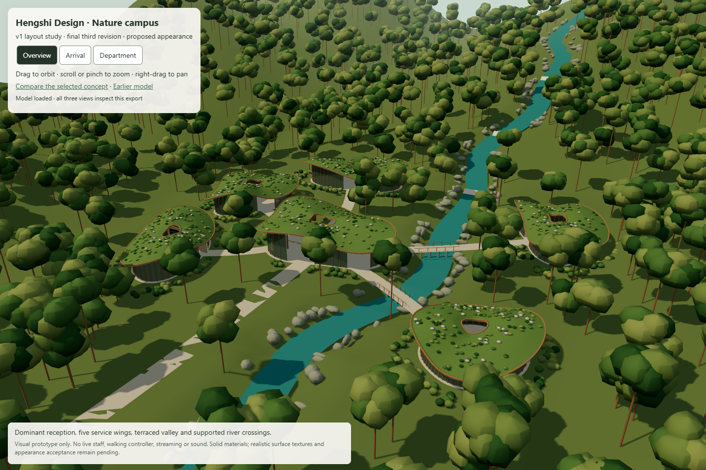
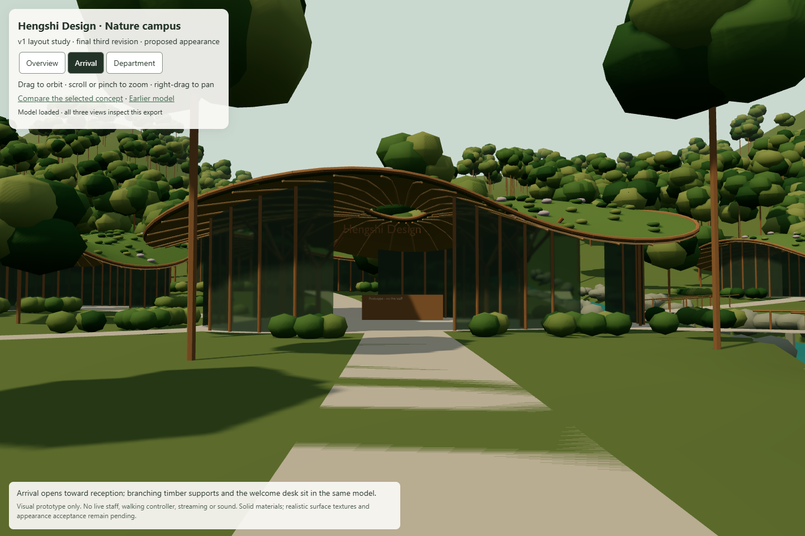
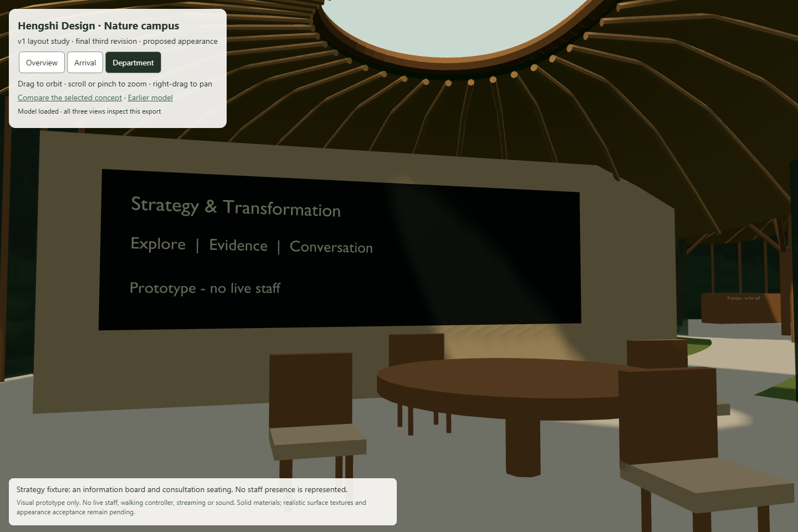
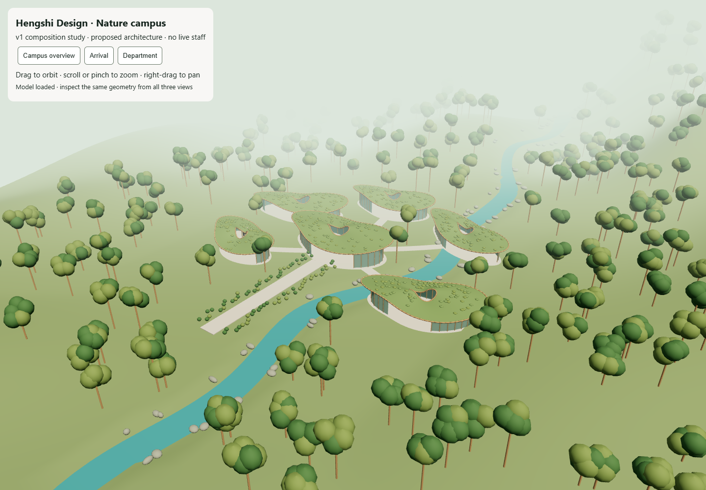
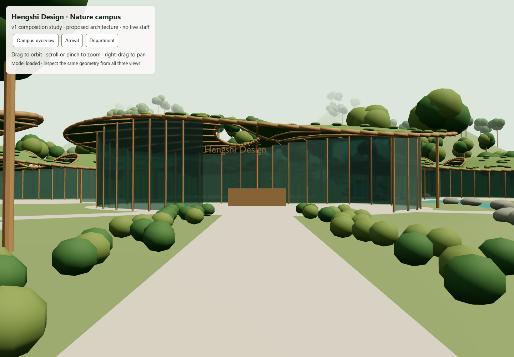
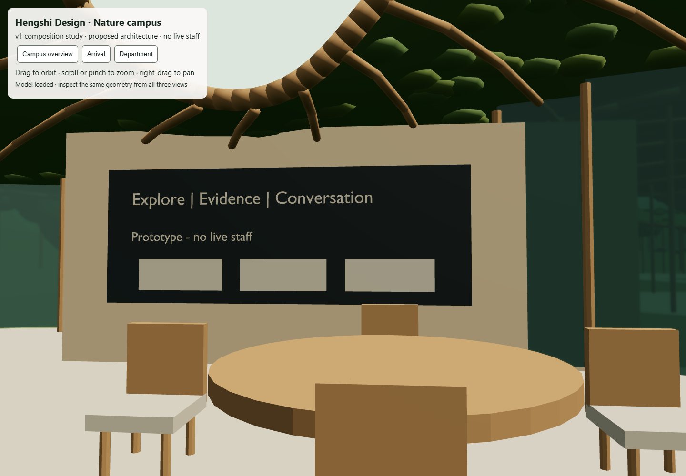
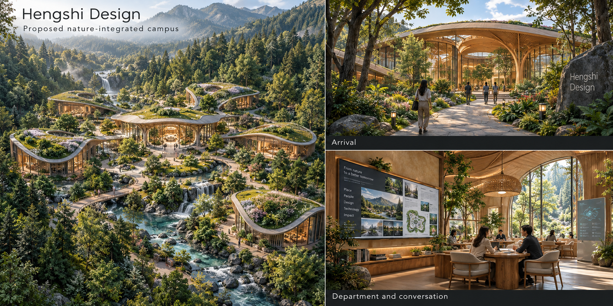

Relationships already visible
Central reception, five surrounding wings, linked paths, river landscape, roof openings, warm timber and one department contact point.
Review the latest layout study, the intended visitor journey and the specific work still needed before this becomes a walkable campus. This is an internal storyboard, not production UI or a certified floor plan.
System walkthrough · Detailed spatial contract · Inspect the latest model
This is the final third model revision. The initial build was mistakenly counted as a revision; independent accounting established that this correction remained available. The earlier model and diagnostic remain below as preserved comparison evidence.
Varied roofs, graded valley terrain, wing-facing entrances and visible bridge piers and rails now belong to one export. The finite geometry probe finds floor beneath every tested connector sample, no tested glazing or desk intersections and no sampled terrain above the paths. These checks do not certify safe walking, construction, accessibility or production performance.



This remains a low-detail interpretation. It does not reproduce the concept's material realism, detailed foliage or complete room composition. The whole export exceeds production transfer budgets; walking, streaming and sound are absent. The independent study review records bounded PASS for these observations and limits. The founder accepts this composition as the layout basis under D-071. Detailed materials, foliage and final appearance remain unfinished. Acceptance grants no extra substantial composition correction; all three normal study revisions are used.
Orbit and inspect the latest model · Source, measurements and limits
The retained footprints below use the earlier composition generator's coordinates and contour function. They show placement, not approved dimensions or collision-safe paths. All five volumes are visible as a future layout; production wing release order remains AI + Data, Strategy, Immersive + Creative, Digital + Growth, then Cloud + Reliability after foundation.
On small screens, scroll the plan horizontally; keyboard users can focus its region and use arrow keys. Gold links indicate the representative sequence, not a verified walking path.
The earlier Strategy fixture has a prototype information board. That makes it the representative interior view, not the first production wing.
The Immersive & Creative footprint overlaps the river; the two right-hand paths cross it. The earlier model has no authored collision meshes or verified bridges/thresholds. Its defects are retained below; the latest study and finite diagnostic above remain separate from walking acceptance.
A read-only inspection of the earlier composition export found that all five department connector centrelines intersect reception glazing. Digital, AI + Data and Immersive + Creative also intersect the welcome desk; four approaches intersect department glazing. The two eastern routes have paving above river samples, without verified bridge support.
The independent assessment review reproduced these observations. It validates this diagnostic, not a walkable model. The method and limits distinguish sampled render geometry from body clearance, authored collisions and structural support.

Open the diagnostic on its own. These observations define the earlier repair targets; the latest finite diagnostic is above. Neither diagnostic certifies safe walking. Further substantial model revision needs the applicable revision-limit decision.
Mouse/touch movement is selected scope. Exact gestures, collision geometry and measured streaming/audio budgets are still proposed and need acceptance. No free walking, live staff, booking or sound runs in the model viewer.



Captured from the existing browser viewer, 4 October 2026. Same GLB across all three views; these are not the stale Blender department render. The viewer uses orbit/zoom only.

Central reception, five surrounding wings, linked paths, river landscape, roof openings, warm timber and one department contact point.
The latest study adds varied roof contours, graded terrain, oriented openings and visible river crossings. Its repeated procedural roof language, simplified foliage, solid surfaces and sparse interior still differ from the concept. The composition is accepted as the layout basis. Final appearance and a collision-ready route remain unaccepted.
A reusable asset kit means editable building and landscape parts, varied to create this campus. It is not a collection of identical huts. These families come from the concept and World definition; their final appearance and budgets still need review.
One dominant reception, five distinct wing silhouettes, curved planted roofs, timber frames, glazing and usable entrances. Shared construction parts must preserve those differences.
Paths, terraces, thresholds and visibly supported river crossings. Separate collision surfaces must follow the same levels, rather than relying on visual overlap.
Reusable tree and plant variants, roof gardens, boulders and riverbanks. Near, middle and distant layers create the valley's depth.
Continuous shaped terrain, river and cascades, with distant scenery variants. A row of mountain props cannot provide the concept's landscape composition.
Timber ribs, wall surfaces, seating, tables, plants and information-board surrounds. Readable service content also appears in semantic panels.
Directories, evidence boards and consultation furnishings. Actual AI, staff availability and booking actions are supplied by the system, not decorative people.
The latest study has 16 solid-colour materials; the earlier composition has 11. Both lack texture images. Timber grain and detailed surface planting are absent. Material polish alone cannot establish a faithful composition or safe layout. The accepted logo, interface colours, evidence labels and accessibility rules remain in force.
Optional atmosphere, off until the visitor enables it. This board and the current model viewer play no sound. The proposed sound zones follow the visitor's location, not every area downloaded in the background.
Breeze, birds and water complement the landscape. Quiet or muted browsing offers the same information and actions.
A gradual transition to quieter sheltered ambience. No imitation of a receptionist, ringing phone or active conversation.
Quiet room ambience and a restrained contextual layer. Sound does not indicate whether a specialist is online or a booking succeeded.
Mute and volume persist through turns and area loading. Declining audio avoids optional downloads; hidden tabs pause ambience. Missing or withdrawn sound assets preserve a silent usable journey. Any meaningful speech or cue needs its required media alternatives. Asset rights, loop limits, transition durations and memory budgets remain pending review.
A single safe arrival–reception–eligible wing route, including entrances, bridges, Stop and reversal. Model scale and clearances need an authored specification.
Separate static chunks and shared assets; current, adjacent and recent safe ground retained. No automatic graphics-stream change. Prove failure, eviction and disposal behavior.
Every board maps to the same approved release and semantic route. Staff state and booking outcome come from authoritative services, not people in concept art.
The latest study GLB is 20,860,132 bytes, with 117 mesh nodes and 16 materials. The retained earlier composition is 8,945,052 bytes, with 45 meshes and 11 materials. Neither has a production chunk manifest or authored collision controller. This inspection does not prove desktop/mobile transfer, memory, frame-time or accessibility targets. Full appearance and Phase 1 acceptance remain pending.